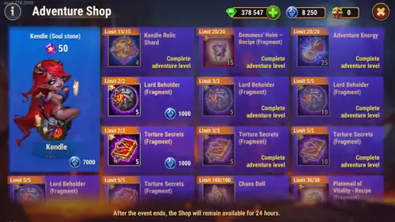

Kendle Adventure and Shop f2p Strategy Tips - What to Buy First
- By: Alexandre Domingos. .
What Is the Kendle Season Adventure and Shop in Hero Wars Alliance?
Hey everyone, Alexandre here from Alexandre Games! If you're reading this, you probably just started the Kendle Season event and you're staring at the Adventure Shop wondering: "What on earth should I buy first?" Don't worry — I've been there, and I'm going to walk you through every single item so you know exactly where to spend your hard-earned coins. No guessing, no wasting resources.
First things first: if you haven't checked out my full Kendle character guide yet, I highly recommend you read the complete Kendle Guide here. Kendle is a Mage/Damage hero who sits in the Back Line and scales with Intelligence. Her entire kit revolves around the Sacrifice mechanic — she tortures herself and her allies, converting pain into raw destructive power. The closer she is to death, the more dangerous her flame becomes. She boosts Magical Critical Hit Chance for the entire team and her legendary relics allow even allied pure damage to become critical. She pairs incredibly well with Xe'sha, Aidan, Dorian, Lilith, and Cleaver in Chaos Sacrifice compositions.

Now let's talk about the two currencies you'll be dealing with in this event shop and exactly how to spend them wisely.
Understanding the Two Currencies
Before we dive into what to buy, you need to understand that this event shop uses two completely different currencies. This is very important because they come from different sources and you cannot mix them up:
Valor Coins 
How to earn them: You get Valor Coins by defeating the final boss of the season campaign. Each time you beat the boss, you earn Valor Coins. That's the only way. There's no shortcut here — you have to actually fight and win.
Adventure Coins 
How to earn them: You get Adventure Coins by completing daily missions during the season event. These are the everyday tasks the event assigns you — just keep doing them consistently and you'll accumulate Adventure Coins over time.
Now that you know where each currency comes from, let me tell you the most important thing: not all items in the shop are equally valuable. Some items are event-exclusive and cannot be obtained anywhere else, while others can be easily farmed for free in the regular game. Let me break down every single purchase for you.
How Many Times Can You Beat the Boss? Valor Coin Strategy
This is one of the most important questions to plan around before the season even starts. Based on real gameplay data:
- F2P players can defeat the final boss approximately 8 to 9 times during the season — occasionally reaching 10 on a good run.
- Low spenders can reach 10 to 12 boss kills per season.
Here's the problem: you need at least 13 boss kills to collect enough Valor Coins to buy all 13 relic shard bundles required for Relic Level 1 (13 × 4 = 52 shards). The shop allows up to 15 purchases maximum.
So how do you close that gap? The answer is maximizing your Adventure Energy by playing the Treasure Tower chest missions strategically. Each time you open chests in the Tower, you complete event missions that reward extra Adventure Energy — and that energy lets you run more boss battles.
Important: You can buy Adventure Energy in the shop with Emeralds, but it costs 500 Emeralds for just 25 energy with no rewards in return. That is terrible value. The goal of the strategies below is to help you avoid ever needing to buy energy that way by front-loading your energy gains through the tower early in the season.
One important trick: in the season map, some missions let you choose harder enemies that cost less Adventure Energy. Always pick those when available — it's one of the reasons experienced players can squeeze more boss kills out of the same total energy pool.
📦 Tower Chest Mission Rewards
Opening chests in the Treasure Tower during the event completes missions that reward Adventure Energy:
| Chests Opened (total) | Adventure Energy Reward |
|---|---|
| 3 | +10 |
| 5 | +10 |
| 10 | +10 |
| 15 | +15 |
| 20 | +15 |
| 30 | +20 |
Now here's how to apply this by player type. Each row of the table below represents one floor of the Treasure Tower. You get 1 free chest per floor, and can buy a 2nd chest with Emeralds (70 Emeralds for floors 1–5, 135 Emeralds for floors 6–11).
🆓 F2P Strategy — Maximize Energy Efficiently
| Treasure Floor | Floor | Free Chests | Chests w/ Emeralds | Box Value (em.) | Total Value x2 | Chests Opened | Emerald Cost |
|---|---|---|---|---|---|---|---|
| 2 | 1 | 1 | 2 | 70 | 140 | 1 | 0 |
| 4 | 2 | 1 | 2 | 70 | 140 | 2 | 70 |
| 6 | 3 | 1 | 2 | 70 | 140 | 2 | 70 |
| 8 | 4 | 1 | 2 | 70 | 140 | 2 | 70 |
| 10 | 5 | 1 | 2 | 70 | 140 | 2 | 70 |
| 12 | 6 | 1 | 2 | 135 | 270 | 1 | 0 |
| 14 | 7 | 1 | 2 | 135 | 270 | 1 | 0 |
| 16 | 8 | 1 | 2 | 135 | 270 | 1 | 0 |
| 18 | 9 | 1 | 2 | 135 | 270 | 1 | 0 |
| 20 | 10 | 1 | 2 | 135 | 270 | 1 | 0 |
| 22 | 11 | 1 | 2 | 135 | 270 | 1 | 0 |
| Total | — | 11 | 22 | — | 2320 | 15 | 280 em. |
Result: F2P opens 15 chests per cycle, spending only 280 Emeralds. This completes missions at 3, 5, 10, and 15 chests — gaining +15 extra Adventure Energy per day, which adds up to +420 energy over 28 days. Total emerald spend over 28 days: 4,200 Emeralds.
💰 Low Spender Strategy — Push for 20 Chests
| Treasure Floor | Floor | Free Chests | Chests w/ Emeralds | Box Value (em.) | Total Value x2 | Chests Opened | Emerald Cost |
|---|---|---|---|---|---|---|---|
| 2 | 1 | 1 | 2 | 70 | 140 | 2 | 70 |
| 4 | 2 | 1 | 2 | 70 | 140 | 3 | 140 |
| 6 | 3 | 1 | 2 | 70 | 140 | 3 | 140 |
| 8 | 4 | 1 | 2 | 70 | 140 | 3 | 140 |
| 10 | 5 | 1 | 2 | 70 | 140 | 3 | 140 |
| 12 | 6 | 1 | 2 | 135 | 270 | 1 | 0 |
| 14 | 7 | 1 | 2 | 135 | 270 | 1 | 0 |
| 16 | 8 | 1 | 2 | 135 | 270 | 1 | 0 |
| 18 | 9 | 1 | 2 | 135 | 270 | 1 | 0 |
| 20 | 10 | 1 | 2 | 135 | 270 | 1 | 0 |
| 22 | 11 | 1 | 2 | 135 | 270 | 1 | 0 |
| Total | — | 11 | 22 | — | 2320 | 20 | 630 em. |
Result: Low spenders open 20 chests per cycle, spending 630 Emeralds. This completes missions up to 20 chests — gaining +30 extra Adventure Energy per day, which adds up to +840 energy over 28 days. Total emerald spend over 28 days: 17,640 Emeralds. Note: it takes 2,320 Emeralds to open all 33 available chests if you wanted to go all the way.
💎 High Spender Strategy — Maximum Gains
| Treasure Floor | Floor | Free Chests | Chests w/ Emeralds | Box Value (em.) | Total Value x2 | Chests Opened | Emerald Cost |
|---|---|---|---|---|---|---|---|
| 2 | 1 | 1 | 2 | 70 | 140 | 3 | 140 |
| 4 | 2 | 1 | 2 | 70 | 140 | 3 | 140 |
| 6 | 3 | 1 | 2 | 70 | 140 | 3 | 140 |
| 8 | 4 | 1 | 2 | 70 | 140 | 3 | 140 |
| 10 | 5 | 1 | 2 | 70 | 140 | 3 | 140 |
| 12 | 6 | 1 | 2 | 135 | 270 | 3 | 270 |
| 14 | 7 | 1 | 2 | 135 | 270 | 3 | 270 |
| 16 | 8 | 1 | 2 | 135 | 270 | 3 | 270 |
| 18 | 9 | 1 | 2 | 135 | 270 | 3 | 270 |
| 20 | 10 | 1 | 2 | 135 | 270 | 2 | 135 |
| 22 | 11 | 1 | 2 | 135 | 270 | 1 | 0 |
| Total | — | 11 | 22 | — | 2320 | 30 | 1,915 em. |
Result: High spenders open 30 chests per cycle, spending 1,915 Emeralds (saving 405 Emeralds compared to opening everything manually in one sitting). This completes missions up to 30 chests — gaining +50 extra Adventure Energy per day, which adds up to +1,150 energy over 28 days. Total emerald spend over 28 days: 53,620 Emeralds. Savings from manual daily opening vs buying all at once: 11,340 Emeralds over 28 days.
Bottom line: Whichever category you fall into, start this strategy from day one of the season. The extra energy compounds over the full 28 days and directly translates into more boss kills — and more boss kills mean more Valor Coins for Kendle's relics.
💡 Quick note:
⚠️ At the moment, getting the Relic Shard and other top rewards at the season shop requires spending Emeralds.
💎 If you need to buy Emeralds or want to take advantage of seasonal event offers through the official store (Hero Wars Hub), don’t forget to use the code ALEXANDREGAMES 🙌
💙 It costs you nothing and helps support the blog so I can keep creating guides, updates, and detailed skin reviews like this one 🙏
Valor Coin Purchases — Priority Guide
🥇 #1 Priority: Kendle's Relic Shards (Limit: 15/15)
This is, without a doubt, the single most important purchase in the entire shop. Let me explain why in detail.
Each Valor Coin purchase gives you 4 Relic Shards for Kendle. To unlock Relic Level 1, you need to collect 50 shards. That means you need to buy this item at least 13 times (13 × 4 = 52 shards), which means you need to defeat the final boss at least 13 times throughout the event. That's why maximizing your Adventure Energy with the tower strategy above is so critical.
Is it worth the effort? Absolutely yes. Here's why: each relic level gives Kendle a direct boost to Health and Magic Attack. In terms of raw power gained, the relic gives you far more stats per purchase than any other item in the shop. And here's what makes this even more valuable — Kendle's legendary relic skills are extremely powerful:
- Relic Level 1 unlocks Agony Surge — every 10 seconds, if Kendle has more than 30% Health she deals 10% damage to herself and attacks a ranged enemy with pure damage. If she has less than 30% Health, she restores 10% Health every 10 seconds instead.
- Relic Level 10 upgrades Lava Kiss — before activating the skill, Kendle restores 30% of her Health and increases her Magical Critical Hit Chance.
- Relic Level 20 upgrades Purge by Pain — allies' pure damage can now become critical. The chance depends on Magical Critical Hit Chance.
- Relic Level 30 unlocks Reaping Hour — for 3 seconds, each time allies take damage from their own or allied skills, Kendle's pure damage increases further.
As a free-to-play or low-spending player, buy all 15 relic shard purchases before touching anything else. Seriously — make this your mission.
🥈 #2 Priority: Demoness' Helm Recipe (Limit: 20/20)
The Demoness' Helm is a unique equipment item exclusive to Kendle's event. You can only get it during this season or through special paid offers — and those offers are significantly more expensive than what you'd spend in Valor Coins here.
The stats are the same as the Thunder Bell from previous seasons:
| Demoness' Helm Stat | Bonus |
|---|---|
| Intelligence | +710 |
| Agility | +152 |
| Strength | +152 |
The stat gains are not huge. Compared to each relic level — which gives you Health and Magic Attack — the Demoness' Helm is a much smaller boost. So here's my recommendation:
- If you're F2P or low spender: Focus 100% on Relic Shards first. If you have leftover Valor Coins after buying all 15 relic purchases, then buy Demoness' Helm recipes.
- If you can afford both: Go ahead and buy Demoness' Helm recipes too, because this item is event-exclusive. Outside of these events, the only way to get it is through expensive real-money offers. So while the stats aren't massive, the rarity makes it worth picking up if you can.
- If you must skip one: You can safely skip the Demoness' Helm. The stats are modest enough that it won't make or break your Kendle. It's a nice-to-have, not a must-have.
👉 Use the Code: ALEXANDREGAMES
The best place to buy talismans and equipment is the official Hero Wars Hub store. Not only do they have the best offers, but you also earn extra rewards for you and your guild — the more your guildmates purchase, the more everyone benefits!
If you plan to take advantage of the event through the official Hero Wars Hub store, remember to use the code ALEXANDREGAMES.
This does not cost you anything extra and helps me keep bringing the blog content and detailed event guides like this one. Thank you! 🙏
Adventure Coin Purchases — Priority Guide
🥇 #1 Priority: Kendle Soul Stones
If you can buy only one thing first with Adventure Coins, make it Kendle Soul Stones. This is the most important long-term investment in this section of the shop, and many players underestimate it because they only look at the relic shards and forget one critical detail: Kendle still needs enough evolution stars to equip and upgrade her relics.
Here is the important rule in simple terms:
- You need at least 4 stars on Kendle to equip and progress her relic from Level 1 to Level 9.
- You need 6 stars on Kendle to continue upgrading the relic from Level 10 to Level 30.
So even if you buy relic shards with Valor Coins, those relic shards do not solve everything by themselves. If your Kendle is under-evolved, you will hit a wall. That is why Soul Stones are the real foundation of her long-term progress.
Right now, the most reliable way to get a large amount of Kendle Soul Stones is through this event. Later on, the developers will probably release another chance to get more stones, usually through a Skin+ event or a Faction event. They have not been taking very long to release second events for newer heroes. And sooner or later, they also tend to unlock the use of the Evolution Book for that hero. But until that happens, this event shop is your safest opportunity.
That is why my advice is simple: if your Kendle is not already at the star level you need, Soul Stones should come before artifacts. Unlocking relic progression matters more than having a better artifact sitting there that you cannot fully support with hero evolution.
🥈 #2 Priority: Weapon Artifact — Lord Beholder (minimum 3 stars to activate 100%)
Kendle's weapon artifact is called Lord Beholder, and it has a 100% activation chance when triggered. When it activates, it provides a Magical Critical Hit Chance bonus — amplifying the entire team's ability to land critical hits. Since Kendle's whole kit is built around stacking Magical Crit, this artifact multiplies the value of everything she does.
You need to get this artifact to at least 3 stars so the activation chance reaches 100%. After securing enough Soul Stones for Kendle's evolution, this becomes your next major target with Adventure Coins.
🥉 #3 Priority: Book Artifact — Torture Secrets (at least 1 star)
The Book artifact Torture Secrets provides both Magical Critical Hit Chance and Health. You need at least 1 star on it to start leveling it up. More Magical Crit Chance feeds directly into Kendle's skill scaling and her Relic Level 20 upgrade (Purge by Pain legendary) that lets allied pure damage crit — making this artifact exceptionally high-value in a Sacrifice team composition.
#4 Priority: Platemail of Vitality Recipe (Limit: 30/30)
The Platemail of Vitality is a team equipment piece that benefits multiple heroes. Here are the stats:
| Platemail of Vitality Stat | Bonus |
|---|---|
| Health | +22,308 |
| Toughness | +930 |
Here's the list of heroes who use the Platemail of Vitality, ordered by priority of who to equip first:
- Kendle
- Folio
- Guus
- Byrna
- Somna
- Amira
- Octavia
- Maya
- Faceless
- Mushy
- Alvanor
- Helios
- Aurora
- Darkstar
- Daredevil
- Kay
- Markus
- Peppy
If you actively use any of these heroes, this is a solid pickup.
Other Important Adventure Coin Items
Rune Spheres
Rune Spheres are very important for leveling up your glyphs past level 40. Once your glyphs hit level 40, you start needing Rune Spheres to continue upgrading them, and they can feel hard to come by at first. That said, you can earn them for free in Eternal Frontier. If you want a detailed guide on how to maximize your Eternal Frontier runs, check out my Eternal Frontier Guide here.
So, should you buy Rune Spheres with Adventure Coins? It depends on how far you are in the game. If you're mid-game and desperately need glyphs leveled, it's a reasonable purchase. But if you're consistently clearing Eternal Frontier, you might want to save your coins for artifacts instead.
Mastery Crystals
Mastery Crystals are used to upgrade talismans. They're useful, but here's my tip: you can stock up on Mastery Crystals during the Talisman Fever Event, which is a recurring event where you can earn plenty of them. If the Talisman Fever event is coming up soon, I'd suggest waiting and farming them there instead of spending your Adventure Coins here.
Items You Should AVOID Buying
Alright, here's the section that's going to save you from making expensive mistakes. These items might look tempting in the shop, but trust me — they're not worth your coins:
❌ Hero Equipment Pieces
You're better off farming equipment by spending energy in regular campaign stages. Here's the beautiful thing about spending energy: you complete missions for the Season Event and other active events simultaneously, plus you earn Gold, Experience, and the equipment itself. Buying equipment in the event shop is throwing away coins you could use on exclusive items.
❌ Metacubes
You can get Metacubes for free at the Port. No need to spend event currency on them.
❌ Skin Shop Certificates
I know, I know — skin certificates feel valuable. But listen: over time, you accumulate plenty of these from the Outland discount promotions, which is hands-down the best way to spend your Emeralds. During Outland discount events, you get skin stones, complete skins, and certificates. Don't get carried away — as living proof, I currently have over 150 skin certificates sitting unused in my inventory. Here's a golden rule I want you to remember: a fully leveled skin is worth far more than a brand new empty skin. Think about that before you chase certificates.
❌ Spark of Power
In the endgame, Sparks of Power become completely useless. You'll naturally accumulate tons of them as you level up your Titans or progress through the Dungeon. They're a trap purchase — don't fall for it.
❌ Mystery Doll
These can be decent for absolute beginners, but if you're investing in Miu's event, your coins are much better spent on Miu's exclusive items — relics, artifacts, and equipment that you literally cannot get any other way.
❌ Gold
Gold is infinite in the endgame. If you feel like you're always short on Gold, the real solution isn't buying it with event coins — it's optimizing your Titan development and Dungeon farming. I wrote a complete guide on how to generate endless Gold: check out my Dungeon Guide for Infinite Gold.
Quick Summary — Shopping Priority Cheat Sheet
| Currency | Item | Priority | Notes |
|---|---|---|---|
| Valor Coin | Kendle Relic Shards | BUY FIRST | Beat the boss 13+ times for Relic Lv.1 — use tower strategy |
| Valor Coin | Demoness' Helm Recipe | Buy if possible | Event-exclusive but modest stats (INT +710) |
| Adventure Coin | Kendle Soul Stones | BUY FIRST | Needed for 4 stars (relic lv.1–9) and 6 stars (lv.10–30) |
| Adventure Coin | Lord Beholder (Weapon) | High | Get to 3 stars for 100% activation — boosts Magical Crit Chance |
| Adventure Coin | Torture Secrets (Book) | High | At least 1 star to start leveling — Magical Crit + Health |
| Adventure Coin | Platemail of Vitality | Medium | Good for Kendle, Folio, Guus, Byrna and others |
| Adventure Coin | Ring of Intelligence | Low | Free from Valkyrie Expeditions |
| Adventure Coin | Rune Spheres | Situational | Farmable in Eternal Frontier |
| Adventure Coin | Mastery Crystals | Situational | Wait for Talisman Fever Event |
| Any | Equipment / Metacubes / Skins / Gold / Sparks | AVOID | Free from regular gameplay |
Final Thoughts
Kendle is a game-changer for Sacrifice and pure damage teams. Her kit turns pain into power — the more her team sacrifices health, the more devastating her output becomes. Her legendary relics unlock allies' pure damage crits and an autonomous Agony Surge that can be a lifeline when she's low on health. The synergy with Xe'sha, Aidan, Dorian, Lilith, and Cleaver in a full Chaos Sacrifice comp is some of the most explosive scaling in the game right now.
The key takeaway from this guide is simple: prioritize what you can't get anywhere else. Relic Shards and event-exclusive items should always come first. Follow the tower chest strategy for your player tier from day one to maximize your boss kill count. Everything else can be farmed through regular gameplay — don't waste your event coins on items the game hands you for free.
I hope this guide helps you make the most out of the Kendle Season Adventure Shop. If you found it useful, share it with your guildmates — the more informed your team is, the stronger everyone gets!
For the full breakdown of Kendle's skills, stats, artifacts, glyphs, and best team compositions, don't forget to check out the complete Kendle Character Guide.
See you in the next guide! — Alexandre 💪
Explore more Hero Wars guides!


Leave Your Opinion!
Did you like our Kendle Adventure Shop guide? Is there something you didn't understand or would like to suggest changes to? We invite you to join our comment section on the Alexandre Games Blog page. Feel free to express your opinion, clarify your doubts, and share your suggestions.
Click the button below to get started: